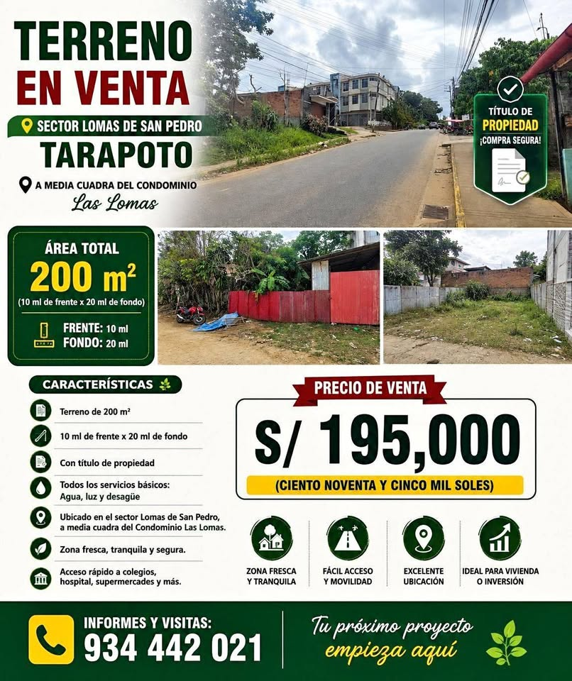

PEN195 200 m²

🏡 TERRENO EN VENTA – LOMAS DE SAN PEDRO, TARAPOTO Excelente oportunidad para vivienda o inversión inmobiliaria Se pone a la venta un terreno urbano de 200 m², ubicado en el sector Lomas de San Pedro, Tarapoto, en una zona residencial de clima fresco, tranquila y con excelente conectividad. 📐 Área: 200 m² 📏 Dimensiones: 10 m de frente × 20 m de fondo 📜 Título de propiedad 💧⚡🚰 Servicios básicos: agua, energía eléctrica y desagüe 📍 Ubicación privilegiada: a media cuadra del Condominio Las Lomas 🏫🏥🛒 Fácil y rápido acceso a colegios, hospital, supermercados y otros servicios. El terreno o